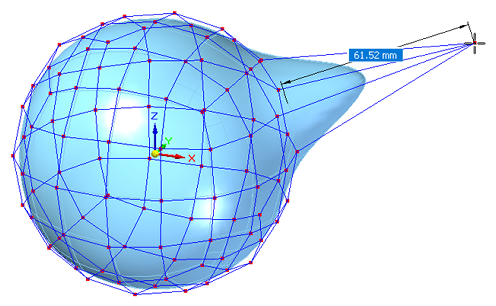

Move using Quick Move
What is Quick Move?
Quick Move moves a vertex without the use of the steering wheel. This requires fewer clicks, which is ideal for fine-tuning shapes and locations.
Using Quick Move
The normal move command happens when you click one or more elements of the body cage. The steering wheel is displayed for you to move the selected elements. Instead of starting a fence selection, you can select a vertex while holding down the mouse key. When a vertex is highlighted, Design Intent is turned off automatically and Quick Move starts. A plane parallel to the screen, through the vertex, is locked and used for the move.
This technique works with the Tip option on the command bar.
-
From the ribbon, choose the Select command→Select options list→Vertex Priority option .
-
Click+hold a vertex on the body cage. Although the steering wheel may obscure the vertex, continue holding down the mouse button as you verify the Tip option is selected on the command bar.
-
Drag the vertex to resize dynamically, or type a value in the edit box.

-
Release the mouse button when you are done moving the point. The steering wheel is displayed again for you to continue working with the Move command.
-
Right-click to finish.
How do I
Subdivision Modeling workflowMove cage elements
Use symmetric mode in Subdivision Modeling
Scale a subdivision model
Split subdivision model faces
Split faces with offset
Offset cage faces
Connect cage faces or edges with a bridge
Delete and fill cage faces
Align a shape to a curve
Learn more
Introduction to Subdivision ModelingUsing PathFinder with subdivision models
Working with cage elements
Creating subdivision features
Working with subdivision features
Moving and rotating cage elements
Look up more details
Subdivision Modeling commandBox command in Subdivision Modeling
Box command bar
Cylinder command in Subdivision Modeling
Cylinder command bar
Sphere command in Subdivision Modeling
Sphere command bar
Torus command
Torus command bar
Scale command in Subdivision Modeling
Blend command
Show Blend Values command
Split command
Split with Offset command
Bridge command
Align to Curve command
Cage Style command